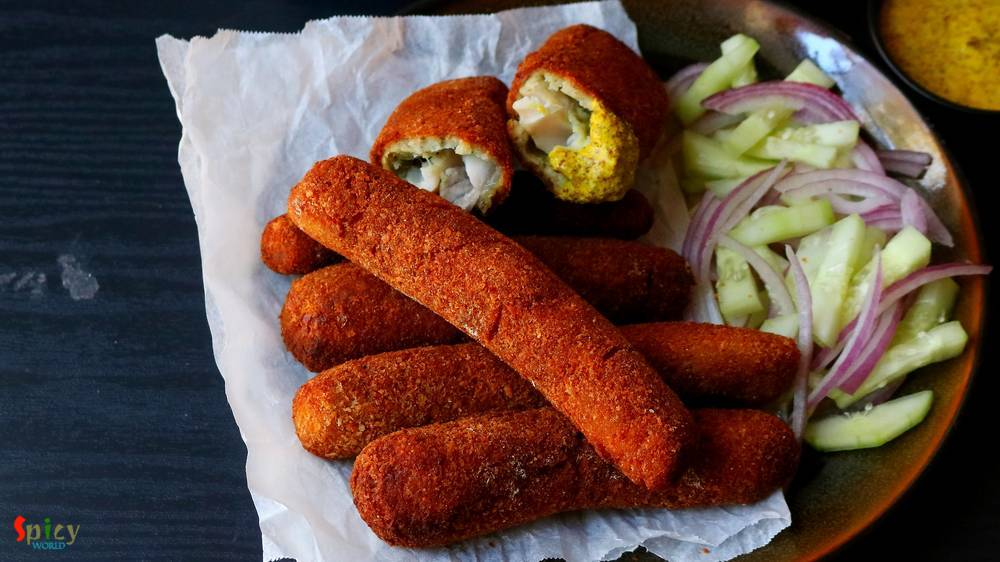
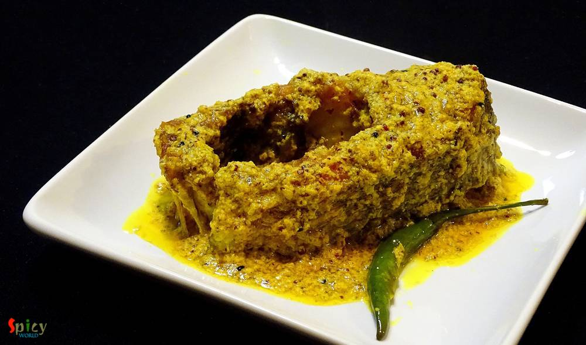
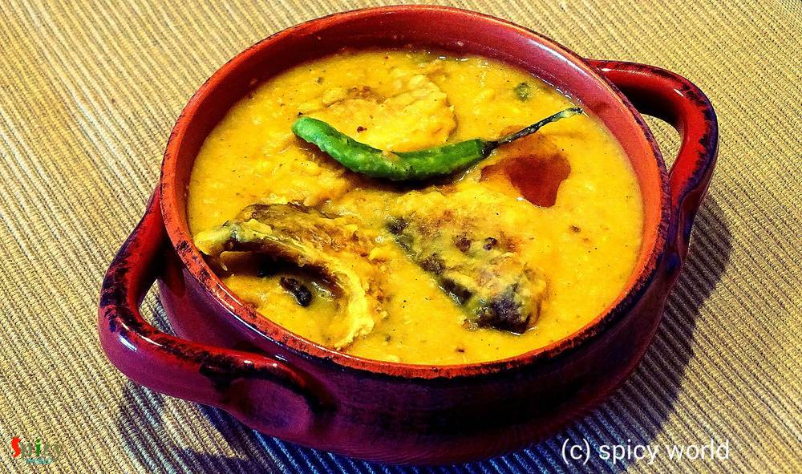

Simple and Easy Recipes
Posts on 'fish'

Nonveg Recipe
Jul 30, 2019
Fish paturi aka Macher Paturi is a traditional Bengali recipe in which any white fish fillet (bhetki or swai or basa is preferable) or shrimp or Hilsa is cooked by wrapping in banana leaf. The word 'Paturi' comes from the Bengali word Pata or Leaf. Almost any Bengali function or good old Bengali restaurant is incomplete without Paturi. You can either steam them or fry them. But I like the fried ve ...


Nonveg Recipe
May 24, 2019
During summer everybody wants to spend less time in kitchen. Usually I make daal, curry or some veggie stir fried for lunch but the hot, humid weather of Texas is pushing me to cook short and simple meal. Well, how can I not cook something special on weekend? You don't have to stand more than 20 minutes in front of those hot burners to creat this awesome Grilled fish and Spinach rice platter. To m ...

Nonveg Recipe
Mar 22, 2019
We all know what Kofta is. Kofta is almost like meatball but it is deep fried and light in weight. Last weekend one of my friend came over for dinner with her family. I cooked few dishes, one of them was this Fish Kofta Curry. Deep fried Fish balls will be cooked in a rich and creamy sauce. I got very positive feedback from everybody. Fish Kofta curry tastes awesome with fried rice, plain steamed ...

Nonveg Recipe
Feb 27, 2019
If you are a fish lover, then 'fish fingers' should be on the top of your list. These crispy, spicy fingers can steal your heart in one bite. In Kolkata, every street food center, college canteens, restaurants sell these lip smacking Fish Fingers with chili sauce or Kasundi. You can use any kind of white fish fillet in this recipe. Oh boy, the taste is unbeatable and unforgettable !! There are no ...
Nov 7, 2018
One of my favorite indo-chinese dish is 'Chili Fish' - which is very similar to Chili Chicken. In this recipe, deep fried fish nuggets will be cooked in a hot and spicy sauce with onions and peppers... so, so delicious ! You can get them in many Chinese restaurants in Kolkata. It tastes heavenly with fried rice or noodles and it is very easy to make. Try this recipe in your kitchen and enjoy with ...

Nonveg Recipe
Jun 13, 2016
We, Bengalis, love to eat fish in many forms. One of the popular snack of West Bengal is 'macher chop'. Spicy crumbled fish inside and crispy coating outside - scrumptious !! We both usually enjoy this snack in the evening along with a cup of tea or with a can of beer. Both combos are unbeatable. If you have to impress any Bengali ever in your life, just indulge him/her in 'Bikeler adda' (evening ...
")
Nonveg Recipe
May 31, 2019
Fish fry or Bhetki fry is a very famous street food of West Bengal. Bhetki (or any white fish) will be first marinated in a green paste then they will get a coating of breadcrumbs and before serving will be fried until golden. There is a fast food center in Chandannagar, named 'robi fast food center', to me he is the best fish fry maker. As my school was in Chandannagar, so I know more shops of th ...

Nonveg Recipe
May 1, 2018
'Sobji diye Macher Jhol' is nothing fancy in Bengali households. But we people have crazy obsession about it. Tollywood made a movie named 'Macher Jhol' ! So, being a Bengali I had to share this recipe with you all. You can make so many variations of this dish. Today I made it without onion and garlic, but you can surely add them if you want. One can also skip the vegetable part. Do try this easy ...

Nonveg Recipe
Apr 12, 2016
I always find immense pleasure in cooking deep fried dishes, I know they are not always healthy to eat, but then, who is watching ? I made this 'fish pokora' last month and simply forgot to post. It is close to 'amritsari fish fry' but I didn't use lots of spices, that's why they are just 'fish pakora'. You can enjoy this with chilli sauce / chutney / coke / beer. Everytime they will taste scrumpt ...

Nonveg Recipe
Aug 12, 2016
He bought a large packet of Tilapia fillets last week. He is a crazy fan of fish and can eat it everyday, whereas, I don't like to eat 'macher jhol' / 'mach vaja' each and every day like him. I get bored very quickly. So, this week I made these 'tandoori fish tikkas' along with some rice and simple daal. They came out delicious and also uplifted the taste of our boring lunch. I followed a very eas ...

Nonveg Recipe
Jul 18, 2016
There are so many fish curry recipes in Bengali cuisine which calls for 'mustard' / sorshe, but this particular item is a jewel because you can cook this in microwave within 5 minutes.Yeaah you read it right ! With some steamed rice this 'sorshe chingri bhapa' tastes best. If you are a shrimp lover and also don't know about this dish, then trust me and give it a try ... you can thank me later !

Nonveg Recipe
Jun 8, 2019
'Rezala' is as we all know white, creamy, velvety gravy. In restaurants chicken or mutton rezala are very popular, goes best with Rumali roti. Here is the recipe of mouth watering 'fish rezala' which I ate one of my sister's wedding. There were plenty of delicious items in buffet but 'fish rezala' was the most crowded stall. That was really finger licking good. Always serve Fish Rezala with plain ...

Nonveg Recipe
Jul 8, 2016
This particular recipe calls for 'bombay duck fish' / loitta maach, but we couldn't get fresh bombay duck here, that's why I used rohu. 'Macher Jhuri' is nothing but a dry preparation of crumbled / mashed fish, which is typically bengali and goes best with steamed rice. Don't forget to add cubed potatoes because without them this curry will be totally incomplete. Try this easy recipe in your kitch ...
")
Nonveg Recipe
Apr 27, 2016
Bengalis love fish. We can eat fish in many forms like thick curry (kaliya), thin curry (jhol), batter fried, shallow fried (mach vaja), steamed version (vapa) and so on. One of the popular among them is 'fried fish'. Now in this category also we have so many variations. The most simple one is shallow fried marinated (with salt and turmeric) fish and the complicated one is 'Fish Roll'. In this rec ...

Nonveg Recipe
Apr 4, 2016
Cooking fried kofta / balls in a rich gravy is an old school Bengali delicacy. I guess everybody loves to eat fried balls made with paneer, vegetables, chicken, fish, mutton etc, but after soaking them in a flavouful gravy they become scrumptious. I had some fish fillets in my fridge and couldn't find any better idea than this to use them. Process of making 'Kofta Curry' is tricky and little bit o ...

Nonveg Recipe
Mar 16, 2016
If fish is the right hand of our cooking, then 'kochuri' must be the left hand. Both of them are quintessential part of Bengali cuisine. Almost every weekend our breakfast has to be 'luchi' or 'kochuri' and on special day or maybe on guests arrival 'stuffed pooris' are inevitable. In this recipe soft and flaky pooris are stuffed with spicy, crumbled fish filling. After one bite, you can't resist y ...

Nonveg Recipe
Mar 15, 2016
This prawn curry is a family recipe and my mom-in-law is an expert of making it. It's a very common fish curry in Bengali households. We love to eat prawns in many forms, but his favorite is this one. I would suggest you to make this dish with small prawns, you will get much more flavours. First I fried the prawns, potato and cauliflowers, then cook them with gravy. Plain rice will go very well wi ...

Nonveg Recipe
Mar 3, 2016
We bengalis usually eat 3-4 items with rice in lunch. Yess, its the family tradition in every household in Bengal. Whereas in USA, either it's lunch or dinner, I always make one curry with rice or roti. Sometimes I wonder how our moms, grand mas and mom-in-laws gets time to cook so many items. 'Doi Maach' is an another tasty bengali fish curry which goes very well with steamed rice. It's a classic ...

Nonveg Recipe
Feb 24, 2016
This is my first try on 'Prawn Biriyani' and I pretty much nailed it. I have made this biriyani in classic way, everything is cooked by 'dum' and also in sealed vessel. The taste and aroma was phenomenal. The flavour of fresh shrimps and long grain basmati rice gave this dish a unique taste, very much different from chicken / mutton biriyani. We both enjoyed it with chicken curry. You have to try ...

Nonveg Recipe
Jan 26, 2016
Its winter, the season of colourful veggies... One of my favourite veggie is 'green peas' / Koraishuti. You can make so many items with these tiny green balls like, 'matar paneer', 'peas kachori', 'dum aloo with peas', 'khichdi', 'veg daal', 'cabbage curry with peas' etc. But 'fish curry with green peas paste' may seems new to somebody. Its nothing but a dry fish curry with a tasty extra addition ...

Nonveg Recipe
Jan 19, 2016
As I am Bengali, my favourite fish curry is this one. My husband is also a huge fan of fish and specially this curry. It goes best with hot plain rice. This is a very easy process and the recipe is pretty simple. Try this in your kitchen and let me know how it tastes.

Nonveg Recipe
Dec 2, 2015
This snack is a very popular street food in West Bengal. You will enjoy these croquettes more from small street food shop / gumti / jhupri , though I don't have any experience of eating 'chingrir chop' from any restaurant. In US, there is no 'gumti', thats why I had to make those in my kitchen and brought the exact taste from Bengal. They were really delicious and we enjoyed them with chilli sauce ...

Nonveg Recipe
Nov 9, 2015
This lentil soup is one of the traditional food in Bengal. Last weekend I had two fish heads in my fridge. I am personally not too much fond of plain fish head curry. So, I made this dish and it came out really perfect like 'biyebari'. In most of the bengali wedding this dish is must for lunch and everybody loves it. I ate the home made version of this daal twice from my mom. Those times I really ...

Nonveg Recipe
Nov 6, 2015
Bengalis make various kinds of fish curry with different types of fishes. The most simple and easy one is 'macher jhol' or fish curry. 'Jhol' means runny version of a curry. This dish is usually served as lunch with steamed rice and we all are fan of it. In 'macher jhol' you can use rohu / katla / tilapia / pomfret / pabda etc. One can add many kinds of vegetables like potato, cauliflower, eggplan ...
")
Nonveg Recipe
Oct 23, 2015
In Bengali ceremony preparing any dish with fish head is a very good sign. There are plenty of dishes where they use fish head. But 'muri ghonto' is the delicacy of Bengal. I learned this dish from my mom. There are also some variations of muri ghonto. Some uses yellow lentil or flattened rice instead of gobindovog rice. But I prefer this dish what my mom used to make.
")
Nonveg Recipe
Oct 14, 2015
We Bengalis are very fond of fish. Our common meal is fish curry and rice. This recipe is one of the fish curry which we make in occasions and gatherings. I already gave you one kaliya recipe and this one is also very tasty. Try this at your home and let me know how it turns out.
")
Nonveg Recipe
Oct 14, 2015
This is one of my favourite snacks in the evening along with tea. You can get this chop from many fast food centers in West Bengal. But today you can make this Bengali style macher chop in your own kitchen. Just follow the recipe and you will get this mouth watering snack very easily.

Nonveg Recipe
Oct 13, 2015
This is a very simple and easy recipe. You can serve this as starter or maincourse. You can also substitute fish with chicken. It tastes delicious. Try this at your home and tell me about your experience.

Nonveg Recipe
Sep 23, 2015
In Bengali's weekdays lunch menu fish has to be there. There is a say 'mache-bhate-bangali' indicates our common meal is fish curry and rice. This is a special dish for party, occasions or gatherings. Macher kaliya goes very well with sweet pulao, fried rice or even plain rice.